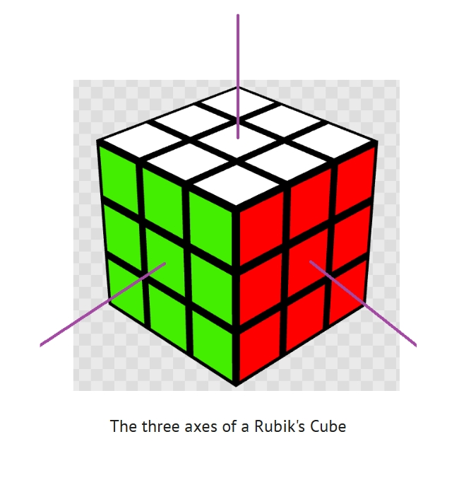
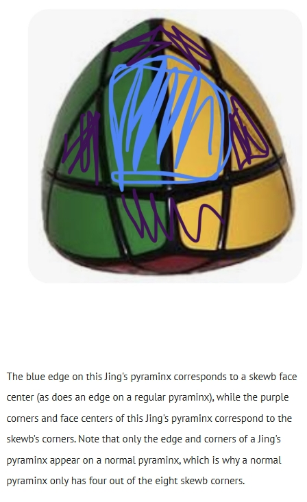

Axis Systems: Background
Most people are aware, at least subconsciously, of the similarities between a pyraminx and a skewb. This tends to be a starting point where people get interested in twisty puzzle mechanisms, but has also caused a lot of misconceptions that can easily confuse those who are newer to the hobby. I'm making this article in response to someone who asked me about the similarities between a pyraminx and a skewb, and I hope, with this article on axis systems, to provide a basic but sufficient understanding of this most important aspect of what makes some puzzles similar to others.
What is an axis?
Before jumping back to the specific example of the pyraminx and the skewb, we should go over exactly what some of the weird terms cubers say actually mean and how the concepts they represent apply to this example and to the larger topic of axis systems. As their name suggests, twisty puzzles are puzzles where some pieces twist (or rotate) in some way to move around (the exact definition of what should count as a twisty puzzle is somewhat a debated topic within the cubing community, so I won't get into specifics here since it's not relevant). On most things we call twisty puzzles, you can twist some part of the puzzle that moves independently of the rest of the puzzle (a layer), and that rotation is centered around some invisible line that goes through the puzzle. This invisible line is what we refer to as the axis of rotation, or simply, an axis. On 99% of puzzles that an ordinary cuber would encounter in their cubing career, the axes of a puzzle meet at a single point called the origin (puzzles with multiple origins do exist, such as bubbloids, but for now, we'll ignore them to keep things simple), which is typically located in the core of the puzzle. What you'll notice if you draw these axes extending from the core of a puzzle to its outside, you end up with an array of different patterns, with some different puzzles sharing the same axis pattern.

The specific pattern/configuration of axes on a puzzle is called the axis system. Now, back to the example of a skewb and a pyraminx:
In fact, if you take apart a skewb and a pyraminx, you'll see that they have the same tetrahedral-shaped core. So now we've established that the skewb and the pyraminx have the same regular tetrahedral axis system. You might be wondering, what more, exactly, makes these puzzles similar?
Equivalent Pieces
Puzzles with the same axis system often have equivalent pieces. This means that a subset of pieces on one puzzle move around and interact in the same way as a subset of pieces on the second puzzle. For example, on a pyraminx and a skewb, a pyraminx's 6 edges correspond to a skewb's 6 face centers, and the pyraminx's 4 "centers" correspond to one of the skewb's corner tetrads (four corners that can move to each other's locations using only normal turns and no cube rotations). The other tetrad of skewb corners does not correspond to any piece on a pyraminx, but do correspond to the centers of a Halpern-Meier Tetrahedron or Jing's pyraminx.

An Overview of Different Axis Systems
The most common axis systems are the four which correspond to face-turning platonic solids. You might be wondering, aren't there five, not four, platonic solids? And while that's correct, the tetrahedral axis system is actually the same as the octahedral axis system, which can be seen in the fact that you can truncate a regular tetrahedron into a regular octahedron. So the four face-turning platonic axis systems are tetrahedral/octahedral, cubic, dodecahedral, and icosahedral. On most puzzles, the number of legal stops on a turn corresponds to a rotation on the axis system's corresponding polyhedron that results in the shape appearing the same after a rotation (in other words, this is a symmetry of the entire figure). This means that puzzles with a tetrahedral, octahedral, or icosahedral axis system have three-fold rotations, puzzles with a cubic axis system have four-fold rotations, and puzzles with a dodecahedral axis system have five-fold rotations. Turns that do not correspond to a symmetry of the entire figure of the axis system's corresponding polyhedron are referred to as fractional turns, which we will ignore for the purposes of this article, again for simplicity's sake.
Note that a face-turning polyhedron corresponds to the same axis system as the corner turner based off its dual (meaning the faces of the first polyhedron correspond to the corners of the second, and the corners of the first correspond to the faces of the second). For example, a corner-turning cube has the same axis system as a face-turning octahedron, and a corner-turning octahedron has the same axis system as a face-turning cube.
Orbits and Symmetries
The axis system of a puzzle also determines the maximum number of sticker locations that can be in an orbit of a puzzle with that axis system, assuming there are no fractional turns. For example, on a corner-turning tetrahedron (such as puzzles from the pyraminx family), there is a maximum of 12 stickers in an orbit, since all 12 rotational symmetries of the tetrahedron can be represented as some combination of single turns around the corners. The same applies to a face-turning cube or corner-turning octahedron, as all 24 rotational symmetries of a cube or octahedron can be represented as a combination of cube face turns/octahedron corner turns, resulting in a maximum of 24 locations per orbit. A face turning-octahedron, on the other hand, can only have 12 locations per orbit, as face turns of an octahedron correspond to corner turns of a cube or tetrahedron, which results in only tetrahedral rotational symmetry and not full octahedral rotational symmetry.